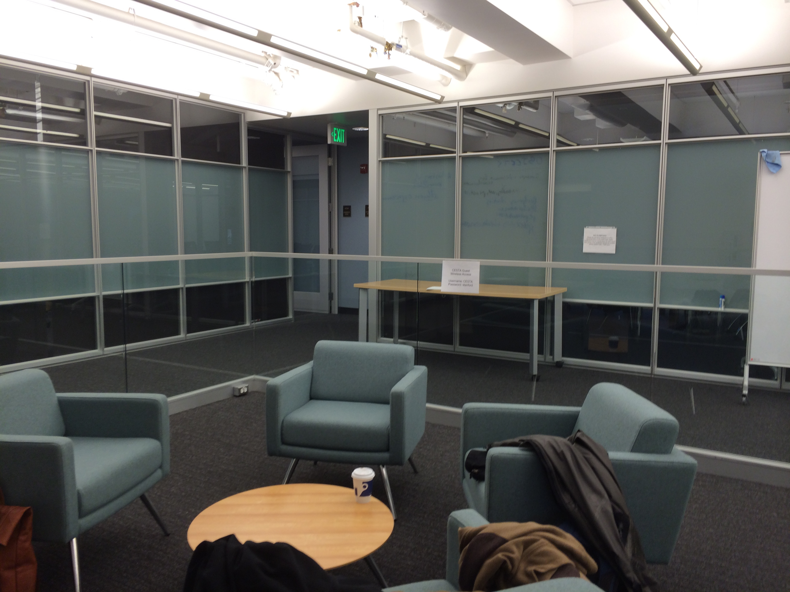
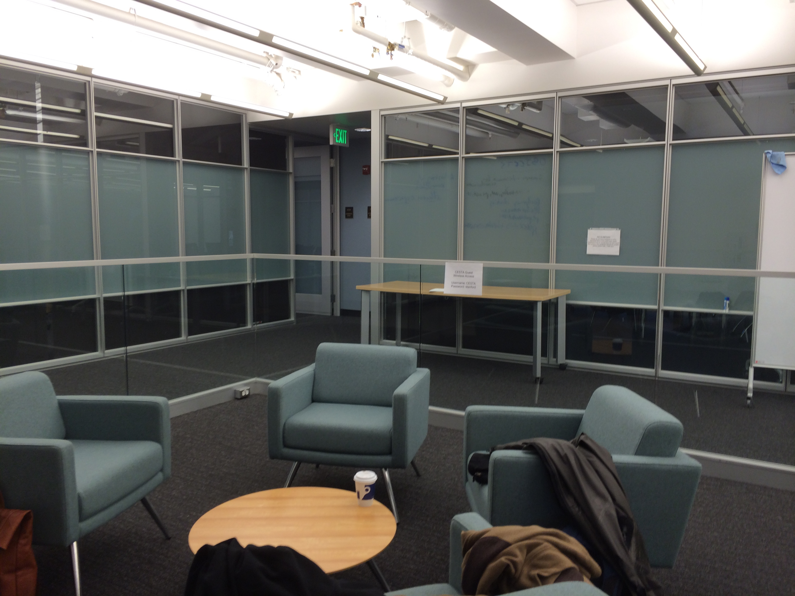
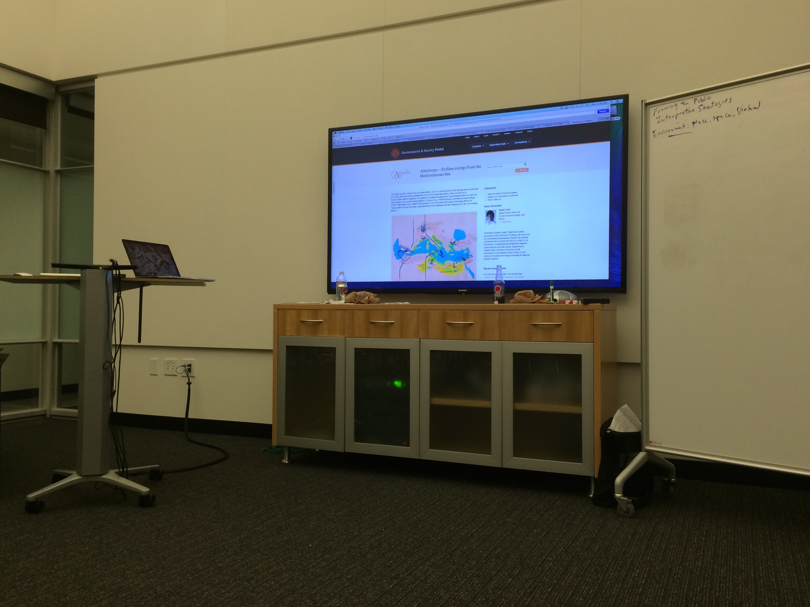
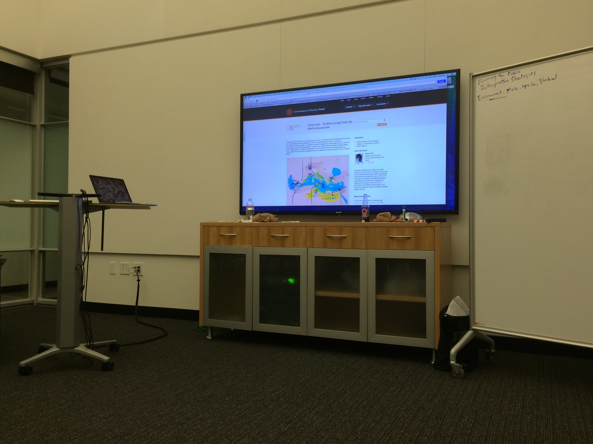
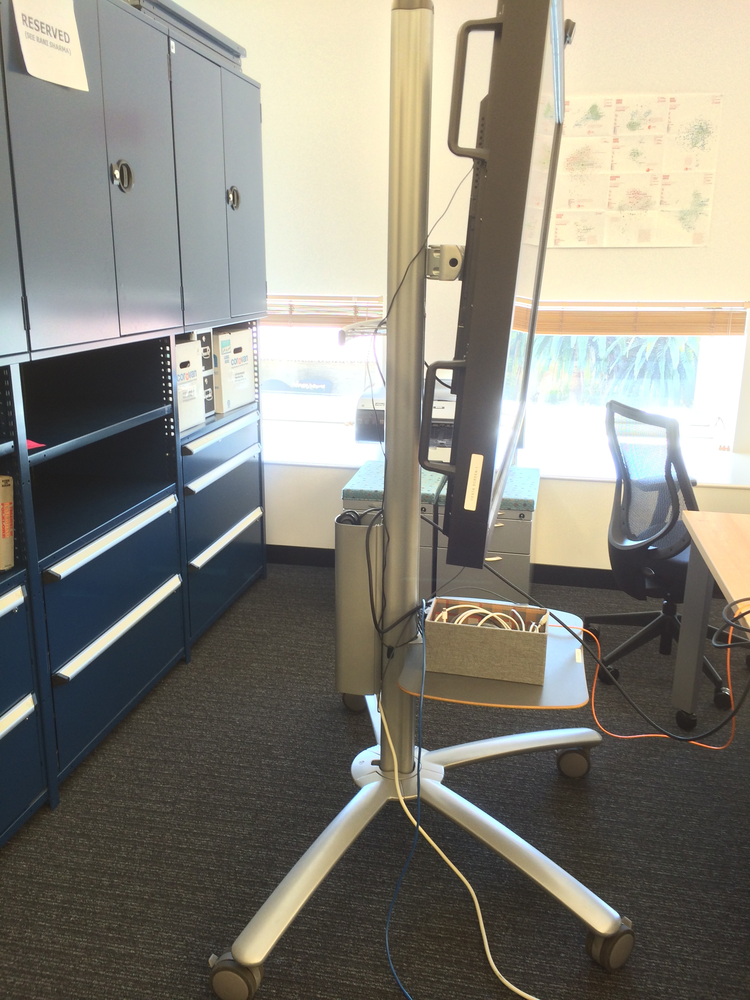
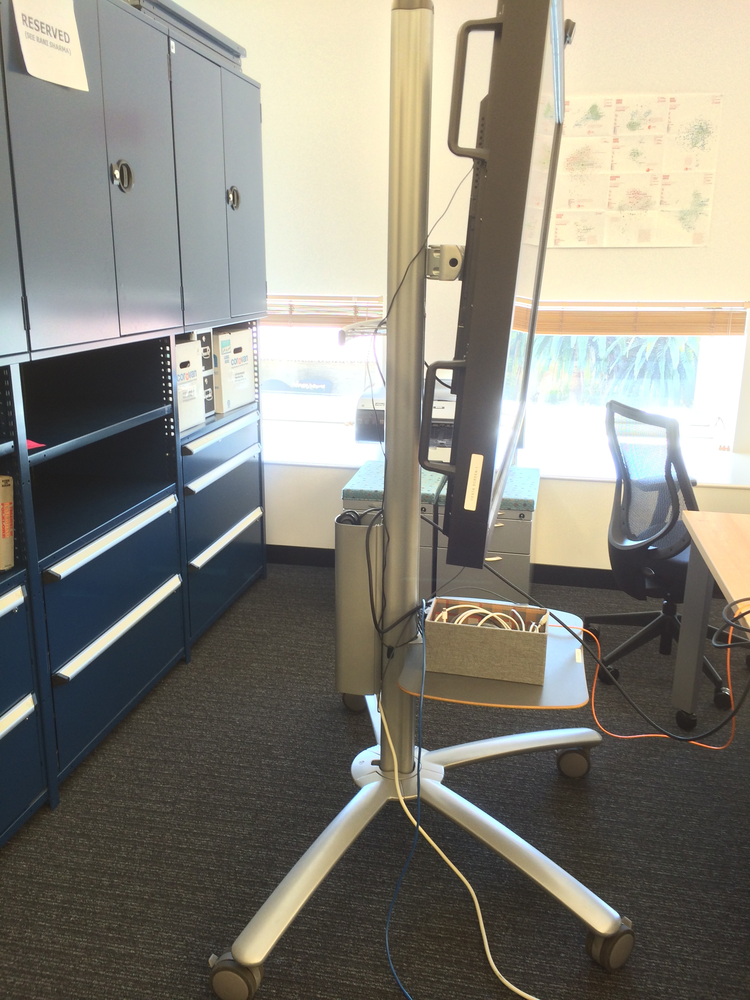

Lab Design
Sketches and Diagrams


Scholars Lab photos - before construction


Digital Technology
SMART Boards
http://education.smarttech.com/en/products/hardware
Cinemassive - video walls
http://www.cinemassive.com/
Cinemassive display, "CURVE Interact Wall" design and planning at Georgia State University Library
http://research.library.gsu.edu/curve
http://research.library.gsu.edu/content.php?pid=463939&sid=3801217
CURVE Interact Wall - pics on Pinterest
http://www.pinterest.com/georgiastateul/curve/
Wall display at Brown DSL (not by Cinemassive) - tech specs
http://library.brown.edu/dsl/
Teaching & Visualization lab at the Hunt Library
http://www.lib.ncsu.edu/spaces/teaching-and-visualization-lab
Equipment and Furniture
Steelcase LearnLab
http://www.steelcase.com/en/products/category/educational/learnlab/pages/learnlab.aspx
Steelcase media:scape (UCLA YRL "pods" setup) - (UCLA YRL "flythrough")
http://www.steelcase.com/en/products/category/integrated/collaborative/media-scape/pages/overview.aspx
video - Steelcase and Grand Valley State University: The Mary Idema Pew Library
Learning Space Toolkit
http://learningspacetoolkit.org/
Learning Spaces Collaboratory (webinar Sept 16, 2014
http://pkallsc.org/events/lsc-webinar-transforming-sandboxing-repurposing-learning-spaces-nurturing-creative-learning
Stanford CESTA lab images (Center for Textual and Spatial Analysis)
 

 


 
